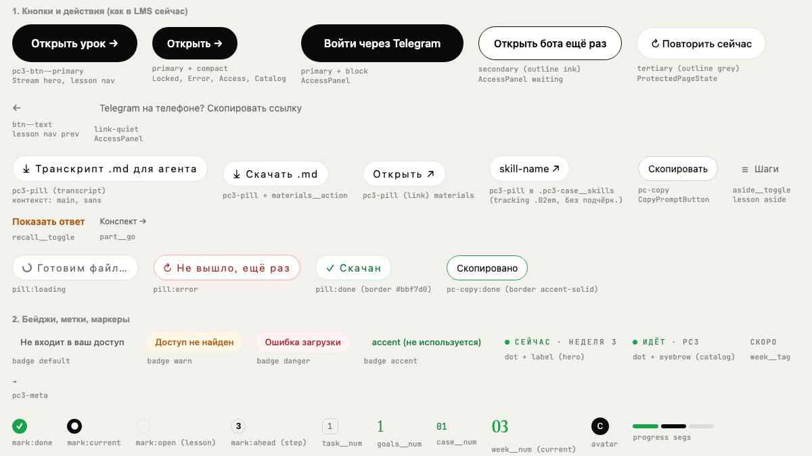
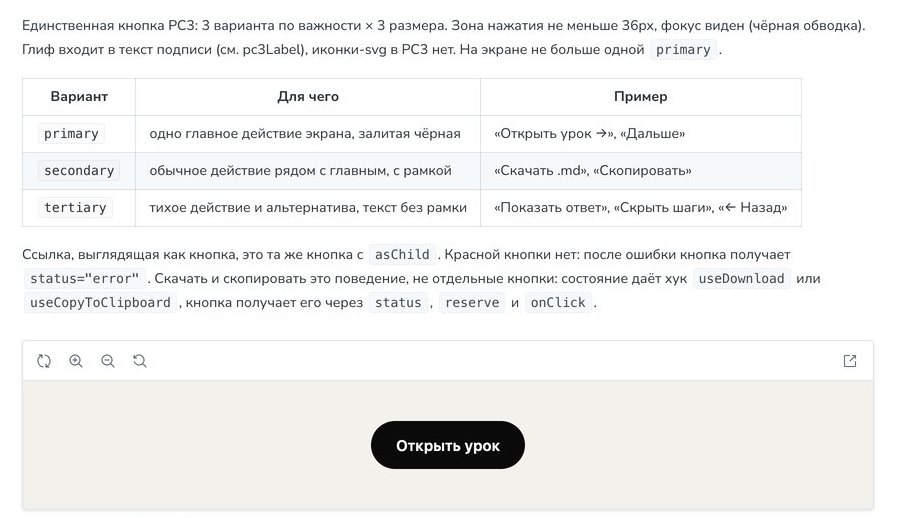
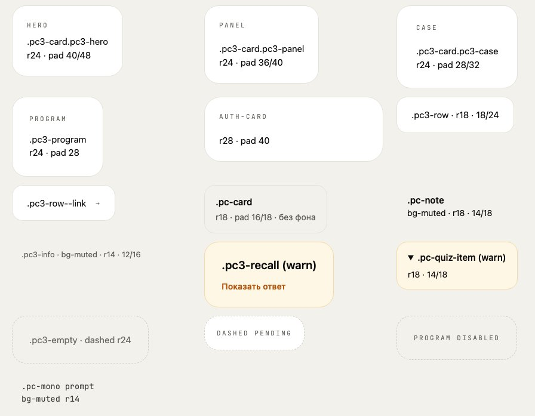
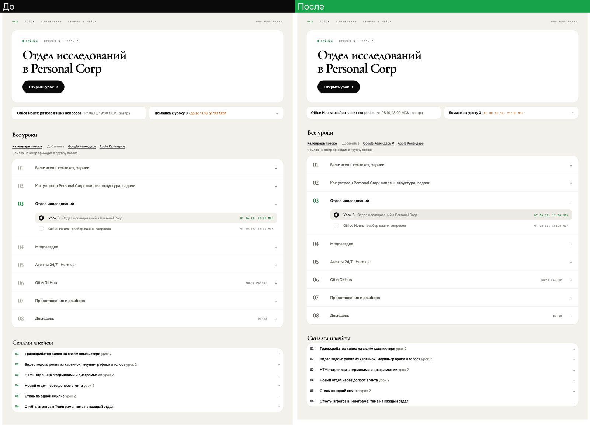
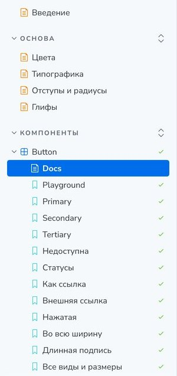
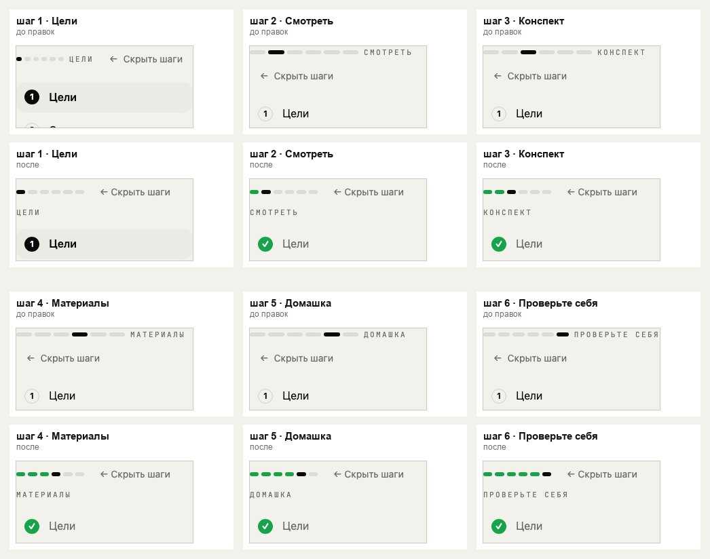

Речь про LMS, учебную платформу моих курсов. Здесь ученики Personal Corp смотрят уроки, читают конспекты и сдают домашки. В сентябре я подключил её репозиторий к Claude Design, нейросети Anthropic, которая рисует макеты интерфейса, и попросил переделать страницу потока и урок. Claude Design нарисовал пять вариантов, я выбрал один, а агенты в Claude Code за день перенесли макет в код. Дальше каждый новый экран агенты дорисовывали сами. Через две недели в интерфейсе жило пятнадцать видов кнопок. Порядок наводили тоже агенты: исполнители на Sonnet 5.5 делали работу, критик на Opus 5.5 искал дубли. Я решал, что остаётся, и смотрел результат глазами.
Этот гайд для тех, кто собирает интерфейс с агентами и ни разу не заводил дизайн-систему. Кода здесь мало, объяснений много. Откуда берётся зоопарк, как его разобрать и как сделать, чтобы он не вырос снова. Принципы подойдут для любого фронтенда, не только для LMS.
- Компонент
- Кусок интерфейса, который пишут один раз и ставят везде: кнопка, карточка, строка списка. Поменял компонент, и он поменялся на всех экранах.
- Вариант
- Версия компонента для другой роли. Например, главная кнопка и тихая. Вариант задают в самом компоненте, а не на месте, где кнопку поставили.
- Токен
- Значение внешнего вида, у которого есть имя: цвет, отступ, размер шрифта. В коде пишут не «#137636», а имя токена. Поменял токен, поменялось везде.
- Storybook
- Витрина компонентов. Каждый показан отдельно, во всех состояниях и с описанием. По ней сверяются и люди, и агенты.
- Эталон
- Набор снимков страниц, с которым сравнивают результат. Если эталон кривой, сравнение подтверждает кривизну.
Откуда берётся зоопарк
Агент пишет экран так, будто он первый. Ему нужна кнопка, и он её рисует: высоту, рамку, шрифт. На следующем экране другой агент рисует свою. Каждая по отдельности выглядит нормально. Вместе получается зоопарк.
Масштаб показала опись. Её делал агент: прошёл все экраны и выписал каждую кнопку, карточку и подпись, где она лежит и чем отличается от соседей. Нашлось пятнадцать видов кнопок с высотой от 37 до 50 пикселей. Двадцать один вид карточек и двенадцать разных отступов внутри них. Все стили лежали в одном файле: 168 классов, то есть именованных наборов стилей, и ни одного общего компонента.

Правило при этом было. В инструкции для агентов стояло: кнопки брать только из готовой библиотеки. Новые экраны его тихо обходили, и ничто этого не замечало. Агенту неоткуда было узнать, что кнопка уже есть.
Что понадобилось
- Репозиторий и стенд. Фронтенд на React, Vite и Tailwind. Стенд: копия платформы на моём компьютере, где любую страницу можно открыть под тестовым учеником.
- Claude Code. Исполнители на Sonnet 5.5 переводили страницы, критик на Opus 5.5 только читал код и искал дубли. Работа шла фоном, по несколько агентов сразу.
- Storybook. Витрина компонентов, версия 10.6. В готовое приложение её поставил один агент за один заход.
- Скриншоты. Все страницы на двух ширинах, 1280 и 375 пикселей, до правок и после.
- Свежие факты. Перед работой агент-исследователь проверил по первоисточникам, как сейчас устроены Claude Design и Storybook. Память агента тут подводит: инструменты меняются каждый месяц.
- Человек на решения. Что сливается во что, где меняется вид, какой цвет у главного действия. Двадцать решений по описи и ещё около двадцати по ходу работы. На каждое хватало короткого ответа в чате.
- Около полутора суток. От описи до починки эталона.
Как мы навели порядок
Работа шла шестью шагами. На трёх из них решал или смотрел человек.
Опись. Первый агент только читал код. Он выписал каждую кнопку, карточку, метку и строку списка, снял их размеры в браузере и разложил по семействам. Отдельно он показал, где похожие варианты сольются и вид поменяется. Эту часть надо решать до работы, а не после.
Решения. Я прошёл двадцать пунктов описи. Большинство агент предлагал принять как есть. Спорным был цвет: зелёный я оставил только для «сделано» и «сейчас», а номера целей и кейсов стали чёрными.
Набор. Отдельный агент вынес токены в свой файл и собрал из них компоненты. Каждый сразу получил истории в Storybook, то есть свою страницу на витрине. Пока страницы не трогали, все скриншоты совпадали с прежними до пикселя.
Перевод страниц. Три агента работали одновременно, каждый в своей копии репозитория: страница потока, урок, кейсы. Блоки страниц они вынесли в отдельные компоненты, тоже с историями. Самым сложным был урок: его конспект делит код с прошлым потоком, и тот должен был остаться пиксель в пиксель. Остался.

Сверка и критик. Сначала агенты собрали работу трёх агентов вместе и сравнили все страницы со снимками до правок. Потом я позвал критика на Opus. Он ничего не правил, только искал дубли. Нашёл карточку состояния вроде «нужен доступ» или «урок ещё закрыт»: её собрали вручную девять раз, и абзац текста, заданный тринадцатью разными классами. В старом файле стилей из 168 классов осталось 41.
Починка эталона. Самый полезный шаг случился последним, и сделал его я, а не агент. Я открыл урок и увидел, что шапка меню шагов на разных шагах разная. Подробности ниже, в разделе «На чём мы споткнулись».
Как правильно оформить Storybook
Сама идея не новая. Год назад, в июле 2025-го, синьор-фронтендер Маша Крень показывала на моём стриме, как в одиночку тянет сложный интерфейс стартапа. Её страховка: линтер, который сам чинит оформление кода, Husky с проверками перед каждым коммитом, Storybook и Chromatic. Chromatic снимает скриншоты каждой истории, чтобы дизайнер одобрил интерфейс до выкладки.
На каждый компонент агент создал историю. Это хорошая практика: проверяете компонент отдельно, а потом из маленьких лепите большой.
Маша Крень на стриме. Реплика слегка отредактирована: убраны оговорки
Тогда порядок держал человек, а агент помогал. Теперь тот же порядок держат сами агенты, и витрина им нужна ещё больше, чем людям: прошлых экранов агент не помнит.
Первый Storybook у нас вышел свалкой. У одной кнопки было семнадцать историй: «Primary Large», «Outline Small», «Hover», «Focus». Я попросил агента сверить его с официальной документацией. Вот что она советует.
- Одна история, одна идея. Над каждой историей написано, зачем её брать, а не что на ней видно. Это прямо советует документация Storybook про работу с агентами: агент получает этот текст как пример использования.
- Первой идёт Playground. В ней все свойства компонента переключаются на панели Controls. Размеры и цвета смотрят там, отдельные истории для них не нужны.
- Понятная полка. Введение, основа с цветами и шрифтами, компоненты, блоки страниц, страницы целиком. Так советует страница о названиях и иерархии.
- Длинное название. Для блоков с текстом есть история с самым длинным реальным названием. Она показывает, что блок не разваливается.
- Официальная инструкция для агента. Команда
npx storybook skills write-storyвыдаёт агенту правила написания историй прямо под ваш проект.

Кнопку после этого пришлось пересобрать ещё раз. Агенты сделали «Скачать» и «Скопировать» отдельными компонентами, хотя это одна и та же кнопка с разным поведением. Варианты я назвал по важности, как принято в IBM Carbon и Material:
- primary. Залитая чёрная, одно главное действие на экране: «Открыть урок →», «Дальше».
- secondary. С рамкой, обычное действие рядом с главным: «Скачать .md», «Скопировать».
- tertiary. Текст без рамки, тихое действие: «Показать ответ», «Скрыть шаги».
Красной кнопки нет. По правилам Carbon и Red Hat красный бывает только у разрушительных действий вроде удаления, а у нас таких нет.
Какие принципы мы использовали
LMS тут повод. Ниже то, что работает для любого интерфейса, который вы строите с агентами.
Одна кнопка, варианты по важности
Вид кнопки отвечает на вопрос «насколько это важно», а не «что она делает». Главная одна, остальные тише. Как в газете: на полосе один главный заголовок, остальные мельче.
Вид отдельно от поведения
Скачивать, копировать или открывать умеет одна и та же кнопка. Поведение живёт рядом, кнопка его просто получает. Как выключатель: корпус у всех одинаковый, а провода ведут к разным лампам.
Сначала токен, потом вариант, потом разовая правка
Если что-то должно поменяться везде, меняют токен. Не хватает вида, добавляют вариант в компонент, а правку прямо на месте оставляют для единичных случаев. Как с одеждой: сначала размер, потом фасон, и только в крайнем случае подшивают по месту.
Агент сначала смотрит, что уже есть
Перед любым экраном агент открывает витрину и берёт готовое. Без этого он честно рисует новое. Как на кухне: прежде чем бежать в магазин, открой холодильник.
Сравнивай блок с самим собой
Сверка с прошлым снимком доказывает только, что ничего не изменилось, и кривой блок она тоже подтвердит. Поставь рядом один блок в разных состояниях: с коротким и длинным текстом, на узком и широком экране. Как часы: сверять с соседскими бесполезно, если они спешат так же.
Чини образец, а не ставь сторожей
Нашёл дефект: исправь сам компонент и сними новый эталон. Новые правила и проверки вокруг кривого образца только прячут проблему. Как с лекалом у портного: кривое лекало даёт кривые платья, сколько контролёров ни ставь.
Факты из первоисточника
Инструменты для агентов меняются каждый месяц, и память агента отстаёт. Перед решением проверь документацию с датой и цитатой. Как с расписанием поездов: смотрят табло, а не вспоминают прошлый год.
На чём мы споткнулись
Сверка молчала про кривую шапку. Шапка меню шагов урока на шаге «Цели» была высотой 36 пикселей, а на шаге «Смотреть» 60: длинное название выталкивало кнопку на вторую строку. Этот дефект был и до нас. Сверка с прошлым снимком его подтверждала, а склейки «до и после» показывали шаг, где всё выглядело аккуратно. Нашёл я глазами. Теперь каждый блок сравнивается сам с собой: короткое и длинное название, все состояния, две ширины.

Кнопки поделились по действиям. Агенты завели «Скачать» и «Скопировать» отдельными компонентами. Вид у них был один, но набор снова начал расти. Вернули одну кнопку, а поведение вынесли отдельно.
Я отвечал по памяти. Дважды я уверенно рассказал, как Claude Design передаёт макет в код, и дважды ошибся. Помогло только исследование по первоисточникам, с датами и цитатами.
Работу влили в общий код посреди проверки. Пока один агент проверял работу, другая сессия Claude Code уже влила её в основную версию кода и удалила рабочую папку. Проверку пришлось перенаправить на то, что реально лежит в основной версии.
Как повторить
- Попросите опись. Агент проходит все экраны и выписывает каждую кнопку, карточку и подпись: где лежит и чем отличается от соседей.
- Примите решения сами. Что сливается и где поменяется вид. Это быстро, и это ваша работа, а не агента.
- Заведите токены и набор. Одна кнопка с вариантами по важности, поведение отдельно, у каждого компонента истории.
- Поставьте Storybook руками. По документации и команде
npx storybook skills write-story, без мастера установки, который переписывает настройки проекта. - Переводите страницы по частям. Каждый агент берёт свою область и сверяет её со скриншотами.
- Позовите критика. Отдельный агент ничего не правит, только ищет дубли и обходы набора.
- Сравните каждый блок с самим собой. Короткое и длинное название, все состояния, обе ширины.
- Запишите агенту одно правило. Перед любым новым экраном открыть витрину:
npx storybook tools docs list.
Зоопарк вырос не потому, что агенты плохие. Каждый аккуратно делал свой экран. Не было общего места, где видно, что уже есть. Storybook и стал этим местом: теперь агент начинает работу с витрины, а не с чистого листа. А я, когда вижу новую кнопку, первым делом спрашиваю, какой у неё вариант.
Как собирать свою корпорацию агентов, которые делают такую работу, разбираем на Personal Corp. Новые разборы выходят в канале «рис. AI».
Storybook: работа с агентами, Storybook и AI, названия и иерархия, раскладка историй, автодокументация, как устроить Storybook.
Повторы стилей: Tailwind, скилл shadcn о настройке компонентов, токены в shadcn.
Кнопки: IBM Carbon, Material, Red Hat, Octopus.
Стрим: «Как вайбкодят фронтенд синьеры, лайвкодинг с Машей Крень».
Claude: дизайн-система в Claude Design, команды /design и /design-sync, как писать инструкции для Claude Code.